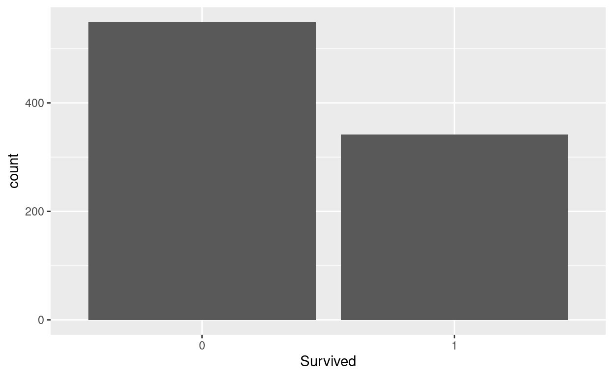
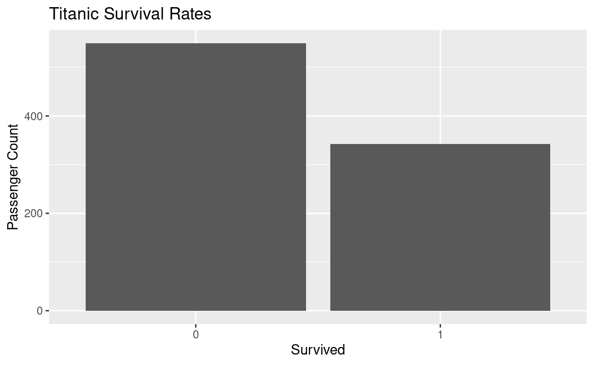
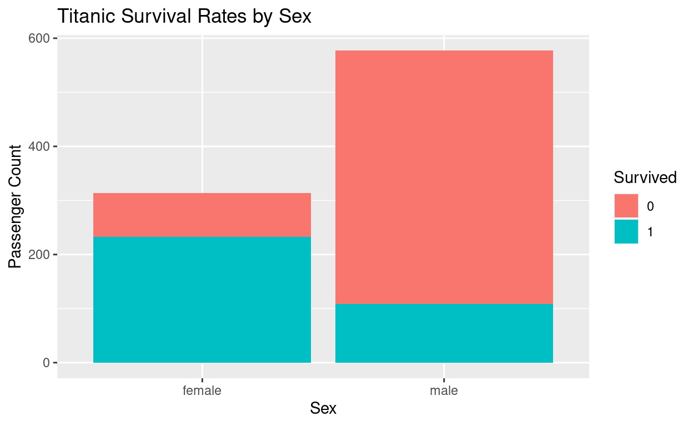
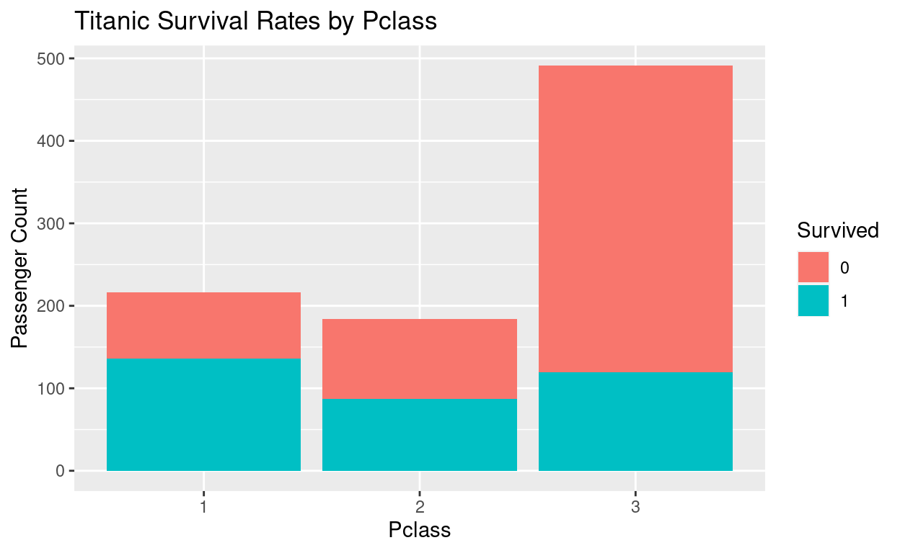
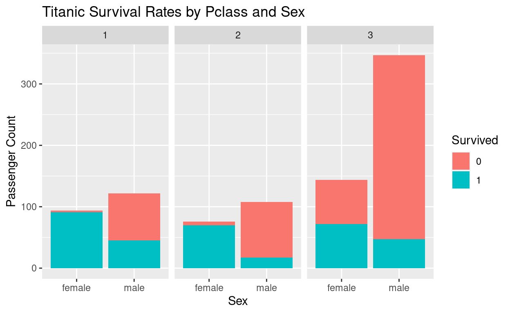
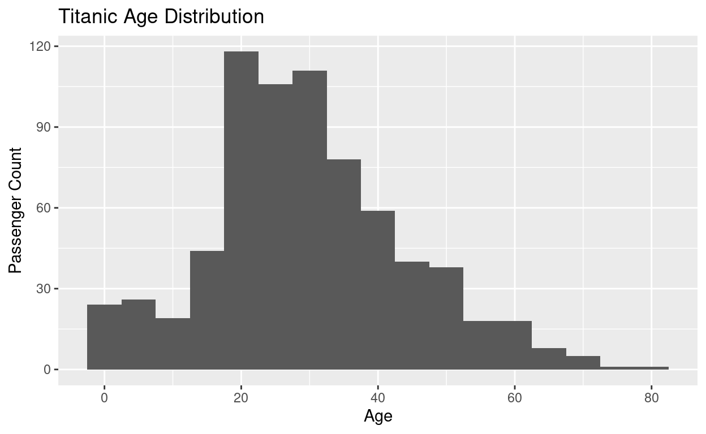
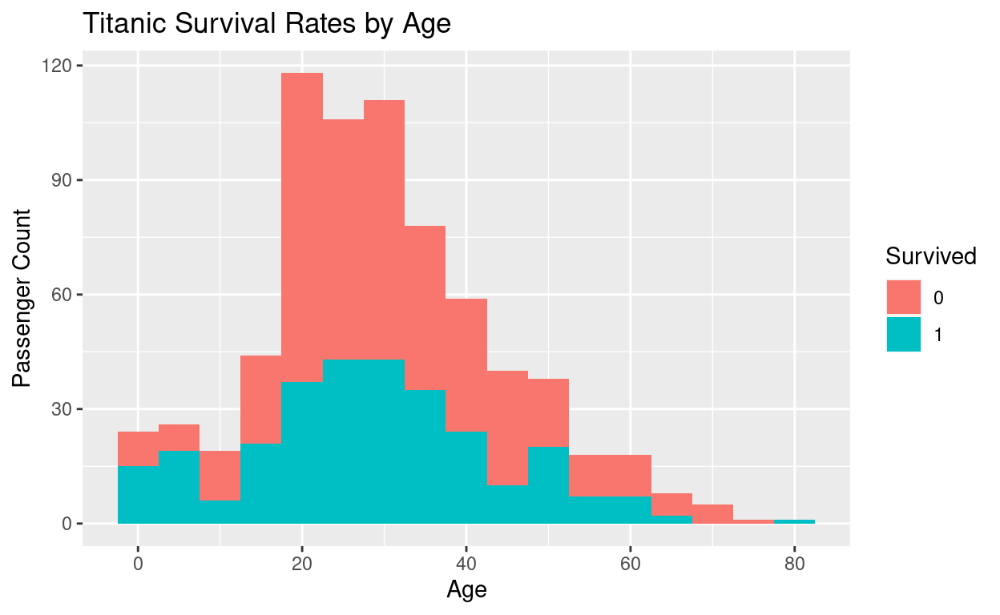

Data visualization is an essential skill of any data analysts or researchers. Simply, “A picture is worth a thousand words”. In this article, I’ll show you the basic principles of data visualization and why it is important?
If you want to work in cloud, you can use RStudio Cloud Service https://rstudio.cloud/
ggplot2 installed in your R environment.ggplot2 package just run this command in your R Console
install.packages("ggplot2")ggplot2 is a data visualization package for the statistical programming language R. Created by Hadley Wickham in 2005, ggplot2 is an implementation of Leland Wilkinson’s Grammar of Graphics—a general scheme for data visualization which breaks up graphs into semantic components such as scales and layers.
In statistics, we generally have two kinds of visualization:
Exploratory data visualization: Exploring the data visually to find patterns among the data entities.
Explanatory data visualization: Showcasing the identified patterns using simple graphs.
“A picture is worth a thousand words”
Data visualizations make big and small data easier for the human brain to understand, and visualization also makes it easier to detect patterns, trends, and outliers in groups of data.
Good data visualizations should place meaning into complicated datasets so that their message is clear and concise.
| Component | Description |
|---|---|
| Data | The dataset being plotted |
| Aesthetics | The scales onto which we plot our data |
| Geometry | The visual elements used for our data |
| Facet | Groups by which we divide the data |
Figure 1: Source: https://matplotlib.org/index.html
R has many built-in datasets. To check the R datasets you can run data() command, and it will give you a lot of datasets. [@xie2015]
data()In this article, I’ll use the Titanic dataset from Kaggle.
ggplot2
library(ggplot2)
titanic <- read.csv("titanic.csv")| PassengerId | Survived | Pclass | Name | Sex | Age | SibSp | Parch | Ticket | Fare | Cabin | Embarked |
|---|---|---|---|---|---|---|---|---|---|---|---|
| 1 | 0 | 3 | Braund, Mr. Owen Harris | male | 22 | 1 | 0 | A/5 21171 | 7.2500 | S | |
| 2 | 1 | 1 | Cumings, Mrs. John Bradley (Florence Briggs Thayer) | female | 38 | 1 | 0 | PC 17599 | 71.2833 | C85 | C |
| 3 | 1 | 3 | Heikkinen, Miss. Laina | female | 26 | 0 | 0 | STON/O2. 3101282 | 7.9250 | S | |
| 4 | 1 | 1 | Futrelle, Mrs. Jacques Heath (Lily May Peel) | female | 35 | 1 | 0 | 113803 | 53.1000 | C123 | S |
| 5 | 0 | 3 | Allen, Mr. William Henry | male | 35 | 0 | 0 | 373450 | 8.0500 | S | |
| 6 | 0 | 3 | Moran, Mr. James | male | NA | 0 | 0 | 330877 | 8.4583 | Q |
# Check data structure
str(titanic)
'data.frame': 891 obs. of 12 variables:
$ PassengerId: int 1 2 3 4 5 6 7 8 9 10 ...
$ Survived : int 0 1 1 1 0 0 0 0 1 1 ...
$ Pclass : int 3 1 3 1 3 3 1 3 3 2 ...
$ Name : chr "Braund, Mr. Owen Harris" "Cumings, Mrs. John Bradley (Florence Briggs Thayer)" "Heikkinen, Miss. Laina" "Futrelle, Mrs. Jacques Heath (Lily May Peel)" ...
$ Sex : chr "male" "female" "female" "female" ...
$ Age : num 22 38 26 35 35 NA 54 2 27 14 ...
$ SibSp : int 1 1 0 1 0 0 0 3 0 1 ...
$ Parch : int 0 0 0 0 0 0 0 1 2 0 ...
$ Ticket : chr "A/5 21171" "PC 17599" "STON/O2. 3101282" "113803" ...
$ Fare : num 7.25 71.28 7.92 53.1 8.05 ...
$ Cabin : chr "" "C85" "" "C123" ...
$ Embarked : chr "S" "C" "S" "S" ...
# Convert data into correct class
titanic$Survived <- as.factor(titanic$Survived)
titanic$Pclass <- as.factor(titanic$Pclass)
titanic$Sex <- as.factor(titanic$Sex)
titanic$Embarked <- as.factor(titanic$Embarked)
str(titanic)
'data.frame': 891 obs. of 12 variables:
$ PassengerId: int 1 2 3 4 5 6 7 8 9 10 ...
$ Survived : Factor w/ 2 levels "0","1": 1 2 2 2 1 1 1 1 2 2 ...
$ Pclass : Factor w/ 3 levels "1","2","3": 3 1 3 1 3 3 1 3 3 2 ...
$ Name : chr "Braund, Mr. Owen Harris" "Cumings, Mrs. John Bradley (Florence Briggs Thayer)" "Heikkinen, Miss. Laina" "Futrelle, Mrs. Jacques Heath (Lily May Peel)" ...
$ Sex : Factor w/ 2 levels "female","male": 2 1 1 1 2 2 2 2 1 1 ...
$ Age : num 22 38 26 35 35 NA 54 2 27 14 ...
$ SibSp : int 1 1 0 1 0 0 0 3 0 1 ...
$ Parch : int 0 0 0 0 0 0 0 1 2 0 ...
$ Ticket : chr "A/5 21171" "PC 17599" "STON/O2. 3101282" "113803" ...
$ Fare : num 7.25 71.28 7.92 53.1 8.05 ...
$ Cabin : chr "" "C85" "" "C123" ...
$ Embarked : Factor w/ 4 levels "","C","Q","S": 4 2 4 4 4 3 4 4 4 2 ...| Variable Name | Description | Variable Type |
|---|---|---|
| Survived | Survival | Categorical(aka; Binary), Yes=1, No = 0 |
| Pclass | Ticket class | Categorical, 1 = First Class, 2 = Second Class, 3 = Third Class |
| Sex | Gender | Categorical(aka; Binary), Male and Female |
| SibSp | # of siblings / spouses abroad the Titanic | Categirical, 1 = Yes, 0 = No |
| Parch | # of parents / children abroad the Titanic | Categirical, 1 = Yes, 0 = No |
| Ticket | Ticket Number | Categirical |
| Fare | Passenger fare | Numeric |
| Cabin | Cabin Number | Categorical |
| Embarked | Port of Embarkation | C = Cherbourg, Q = Queenstown, S = Sothanpton |
ggplot(titanic, aes(x = Survived))+
geom_bar()
ggplot(titanic, aes(x = Survived))+
geom_bar() +
labs(y = "Passenger Count",
title = "Titanic Survival Rates") 
ggplot(titanic, aes(x = Sex, fill=Survived))+
geom_bar() +
labs(y = "Passenger Count",
title = "Titanic Survival Rates by Sex") 
ggplot(titanic, aes(x = Pclass, fill=Survived))+
geom_bar() +
labs(y = "Passenger Count",
title = "Titanic Survival Rates by Pclass") 
ggplot(titanic, aes(x = Sex, fill=Survived))+
geom_bar() +
facet_wrap(~ Pclass)+
labs(y = "Passenger Count",
title = "Titanic Survival Rates by Pclass and Sex") 
ggplot(titanic, aes(x=Age)) +
geom_histogram(binwidth = 5) +
labs(y="Passenger Count",
title = "Titanic Age Distribution")
ggplot(titanic, aes(x=Age, fill=Survived)) +
geom_histogram(binwidth = 5) +
labs(y="Passenger Count",
title = "Titanic Survival Rates by Age")